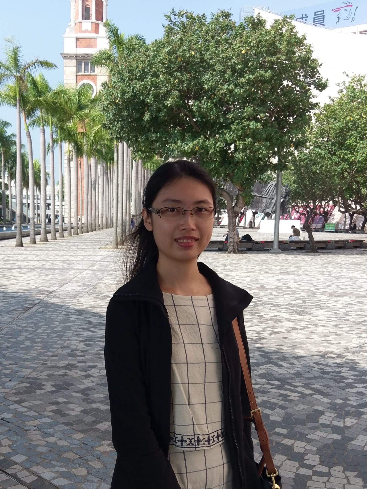

Lab Members
Principal Investigator

Dr. Kanglong Liu 刘康龙
Associate Professor, Lab Director & Principal Investigator
Department of Language Science and Technology
HHB812c, Hung Hom Bay Campus, The Hong Kong Polytechnic University
+852 2766 7451

Bonnie Ho Ling Kwok 郭浩羚
PhD Student
AG518, Core A, The Hong Kong Polytechnic University

Lulu Wang 王璐璐
PhD Student
AG518, Core A, The Hong Kong Polytechnic University